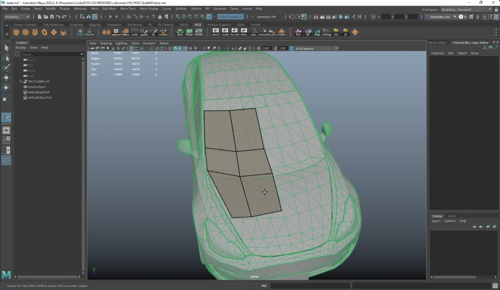
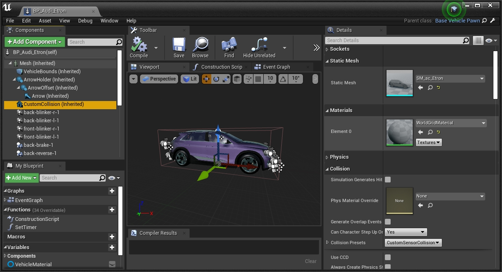

生成详细的碰撞体¶
本教程介绍如何为车辆创建更准确的碰撞边界（相对于对象的原始形状）。它们可以用作物理碰撞体，与碰撞检测兼容，也可以用作基于光线投射的传感器（例如激光雷达）的辅助碰撞体，以检索更准确的数据。新的碰撞机可以集成到 Carla 中，以便所有社区都能从中受益。在 此处 了解有关如何为内容存储库做出贡献的更多信息。
有两种方法可以创建新的碰撞体，但它们并不完全等效。
- 光线投射碰撞体 — 这种方法需要一些基本的三维建模技能。车辆中添加了辅助碰撞体，以便基于光线投射的传感器（例如激光雷达）检索更精确的数据。
- 物理碰撞体 — 这种方法遵循贡献者 Yan Kaganovsky / yankagan 创建的 教程 ，无需手动建模即可创建网格。然后，该网格用作车辆的主碰撞体，用于物理和传感器检测（除非添加辅助碰撞体）。
光线投射碰撞体 ¶
1-导出车辆 FBX ¶
首先需要以车辆的原始网格作为参考。出于学习目的，本教程导出 Carla 车辆的网格。
1.1 在虚幻引擎中打开 Carla 并转到 Content/Carla/Static/Vehicles/4Wheeled/<model_of_vehicle>。
1.2 在 SM_<model_of_vehicle> 点击 right-click 将车辆网格导出为 FBX。
2-生成低密度网格 ¶
2.1 打开三维建模软件，并使用原始网格作为参考，建模一个与原始网格保持可靠的低密度网格。

2.2 将新网格保存为FBX。将网格命名为 sm_sc_<model_of_vehicle>.fbx。例如 sm_sc_audiTT.fbx.
!!! 笔记 至于车轮和附加元件（例如车顶、挡泥板等），新网格应该非常准确地遵循几何形状。放置简单的立方体是不行的。
3-将网格导入虚幻引擎 ¶
3.1 在虚幻引擎中打开 Carla 并转到 Content/Carla/Static/Vehicles/4Wheeled/<model_of_vehicle>.
3.2 点击 right-click 导入新网格 SM_sc_<model_of_vehicle>.fbx。
4-添加网格作为碰撞体 ¶
4.1 进入 Content/Carla/Blueprints/Vehicles/<model_of_vehicle> 并打开名为 BP_<model_of_vehicle> 的车辆的蓝图。
4.2 选择 CustomCollision 元素并在 Static mesh 属性中添加 SM_sc_<model_of_vehicle>.fbx。

4.3 点击上方工具栏中的 Compile 并保存更改。
!!! 笔记
对于摩托车和自行车等车辆，使用相同的组件 CustomCollision 更改车辆本身的碰撞体网格。
物理碰撞体 ¶
!!! 重要 本教程基于 yankagan 的 贡献 ！贡献者还希望感谢 Francisco E 关于 如何在虚幻引擎中导入自定义碰撞 的教程。
该视频 展示了遵循本教程后所取得的结果。
0-先决条件 ¶
- 在 Linux 或 Windows 上 从源代码构建 Carla。
- 可从 官方网站 免费获取 Blender 2.80 或更新版本 （开源 3D 建模软件）。
- 按照 此处 的说明使用 Blender 的 VHACD 插件。该插件使用凸包集合自动创建选定对象的近似值。阅读更多 。
!!! 笔记 这个 系列 和 Udemy 课程 对于新手来说可能是一个很好的 Blender 入门教程。
1-在虚幻编辑器中定义轮子的自定义碰撞 ¶
第 1 步. (在虚幻引擎中) — 添加车轮的碰撞边界。以下视频详细介绍了这些步骤。

2-将车辆导出为 FBX ¶
第 2 步. (在虚幻引擎中) — 将车辆的骨架网格物体导出到 FBX 文件。
2.1 转到 Content/Carla/Static/Vehicles/4Wheeled/<model_of_vehicle>。
2.2 在SM_<model_of_vehicle> 点击 right-click，将车辆网格导出为 FBX。
3 到 4-导入到 Blender 并创建自定义边界 ¶
第 3 步. (在 Blender 中) — 将 FBX 文件导入 Blender。 第 4 步. (在 Blender 中) — 添加凸包网格以形成新的碰撞边界（虚幻引擎对计算效率的要求）。这是最难的一步。如果选择整辆车，VHACD 创建的碰撞边界将不精确且混乱。它将包含锋利的边缘，这会扰乱道路上的行驶。轮子周围要有光滑的边界，这一点很重要。在车身上使用凸分解，后视镜看起来仍然不正确。对于计算机视觉来说，车辆的细节非常重要。由于上述原因，这些步骤被分为两个部分。
4.1 使用 VHACD 工具切出车轮的底部、侧视镜和车身的顶部，以创建第一个边界。使用 VHACD 工具剪掉汽车的下半部分以创建第二个边界（汽车的顶部）。

4.2 使用 VHACD 工具为后视镜创建单独的边界。

!!! 警告
命名对象时要非常小心。每个边界应以 UCX_ 开头，其余名称必须与原始网格 完全 相同 。
5-从 Blender 导出到 FBX ¶
第 5 步. (在 Blender 中) — 将自定义碰撞边界导出到 FBX 文件中。
5.1 仅选择原始车辆和所有新添加的物体进行碰撞。
5.2 在导出菜单中，选中 selected objects 并仅选择“Mesh”。

6 到 8-导入碰撞体并定义物理 ¶
第 6 步. (在虚幻引擎中) — 将新 FBX 作为虚幻资源文件（静态网格物体）导入 Carla。
第 7 步. (在虚幻引擎中) — 将自定义碰撞体导入到特定车辆的物理资源中，以便将其用于计算。
第 8 步. (在虚幻引擎中) — 创建连接不同关节的约束并定义所有部件的物理特性。
这是关于如何更改 Carla 中车辆的默认碰撞体的总结。
打开 Carla 并闲逛一会儿。如果有任何疑问，请随时在论坛中发布。